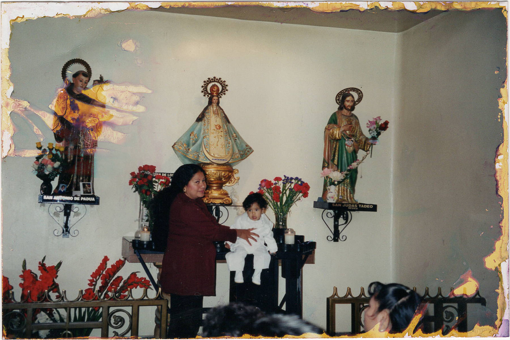

About
The Designer
I'm Gabriel, and I'm a designer born in Los Angeles. Raised by Latin American immigrants in a little house and fostered to embrace my curiosity and crave expansion of my intellect.


I studied Graphic Design at California State University Los Angeles, graduated Summa Cum Laude in Fall 2025.
When I'm not designing I enjoy training martial arts, attending local film screenings, playing my guitar, or playing video games with friends and family.
I'm an INTP, a "Logician". As much as I dislike being put in a box, it fits with my curiosity and need for deeper understanding of my practice to achieve success and communicate complex ideas in a simpler way.
Methods in Practice
Idea
My design practice is centered around building microcosms, or small models meant to represent a greater system or universe that exists across multiple formats.
Process
My approach to building my projects comes from study of relevant data and existing cultural artifacts to build detailed work with intention.
Outcome
Whether I am designing a print publication, user experience for a site, or a custom typeface, I am solving the same problem. Building a bridge between my client and their target audience.